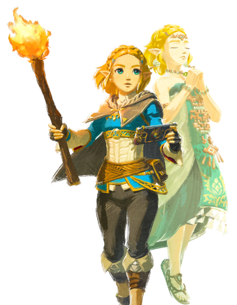
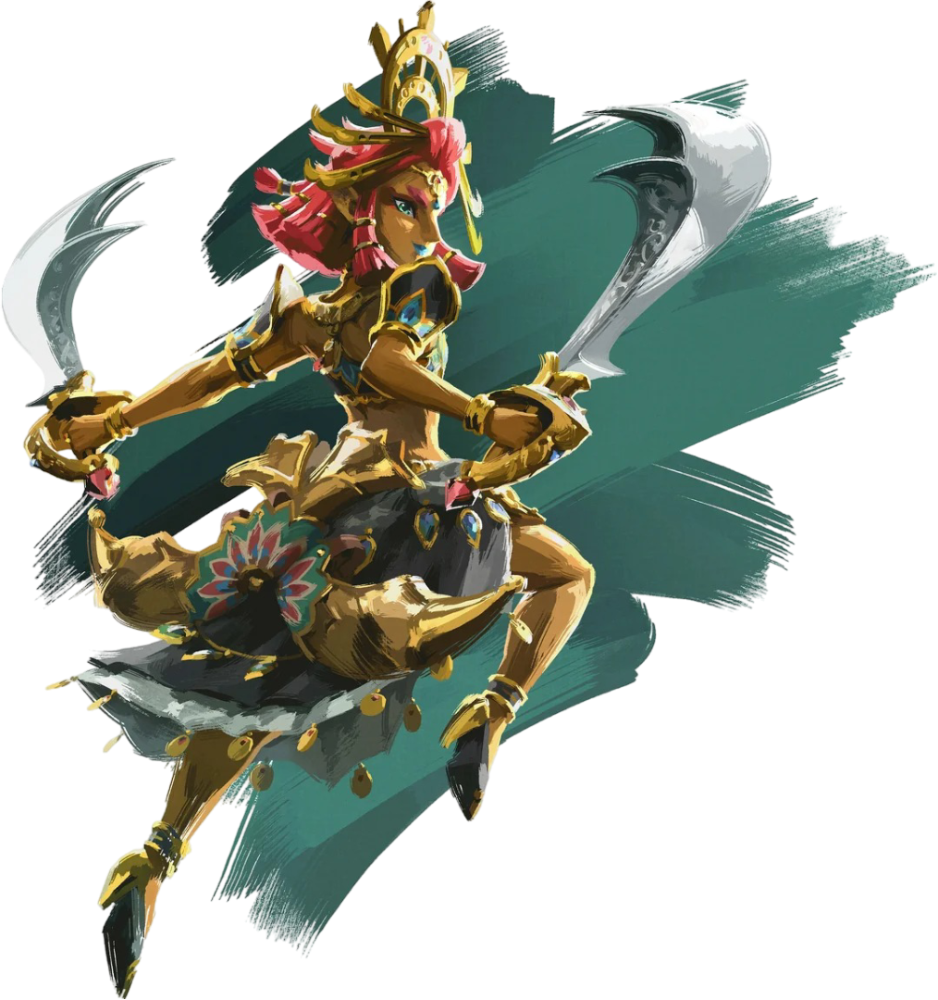

Makeela Riju
tornou-se chefe dos Gerudo após a morte de sua mãe.
Embora seja consideravel jovem para uma chefe, é respeitada por seu povo. Seguindo a linha de sucessão, acredita-se que seja descendente direta de Urbosa.
Ela ajuda Link a derrotar a Besta Divina Vah Naboris depois que ele recupera o Elmo do Trovão do Esconderijo do Clã Yiga.

Makeela Riju